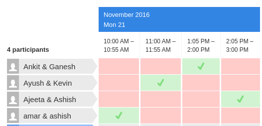

Any report/program/assignment you submit must clearly distinguish your contribution from others (webpages, softwares, report, discussions with other students). The penalty for copying in any form will be severe.
Announcements
Important: All emails either to the instructor or the TAs should begin with subject line "[CS618]" -- without any spaces in the course code (and without quotes). Email not complying to this rule will NOT be entertained.
Project Presentation Schedule 
Slides for lecture #20 uploaded below (on 18th October 2016).
Slides for lecture #19 uploaded below (on 18th October 2016).
Slides for lecture #18 uploaded below (on 15th October 2016).
Slides for lecture #17 uploaded below (on 14th October 2016).
Slides for lecture #15,16 uploaded below (on 07th October 2016).
Reading material for Call-strings approach for Interprocedural Analysis added below (on 27th September 2016).
Project Proposals are due soon. Submit via Moodle.
Slides for lecture #13,14 uploaded below (on 20th September 2016).
Slides for lecture #12 uploaded below (on 15th September 2016).
The course project gives you a chance to explore a specific area of compiler implementation in more depth. You will be required to implement some compiler feature, and perform an experimental evaluation of your implementation. You may do your implementation within any freely-available compiler infrastructure (e.g. LLVM, gcc, Soot, etc.)
Project can be done individually or in a group of two.
Important: Use of git version control system on bitbucket is required for programming assignments and project.
Course Outline
The course will mainly cover topics from the following list (not necessarily in the same order). Not all topics listed below will be covered, and depending on class feedback, new topics may be added.
Must get satisfactory marks in midsem/quizzes. Must be present for at least half of the total number of quizzes.
Supporting Material
Most of the following softwares are available from package repositories of linux distributions. It is recommended to use these repositories and install instead of building them from source.